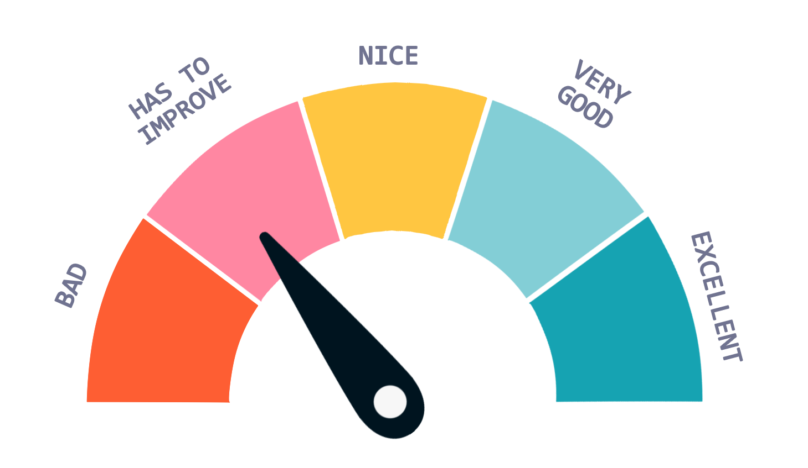

<!--Dependiendo de la puntiacion que tenga el usuario, aparecera una representación gráfica de ésta u otra.
Aparecerá en la página del perfil de éste-->
<ion-card-title *ngIf="mediaScoreString">
  {{mediaScoreString}} PUNCTUATION
</ion-card-title>

<ion-card-title *ngIf="!mediaScoreString">
  NO PUNCTUATION
</ion-card-title>

<div [ngSwitch]="mediaScore">
  <div *ngSwitchCase="1">
    
  </div>

  <div *ngSwitchCase="2">
    
  </div>

  <div *ngSwitchCase="3">
    
  </div>

  <div *ngSwitchCase="4">
    
  </div>

  <div *ngSwitchCase="5">
    
  </div>
</div>
